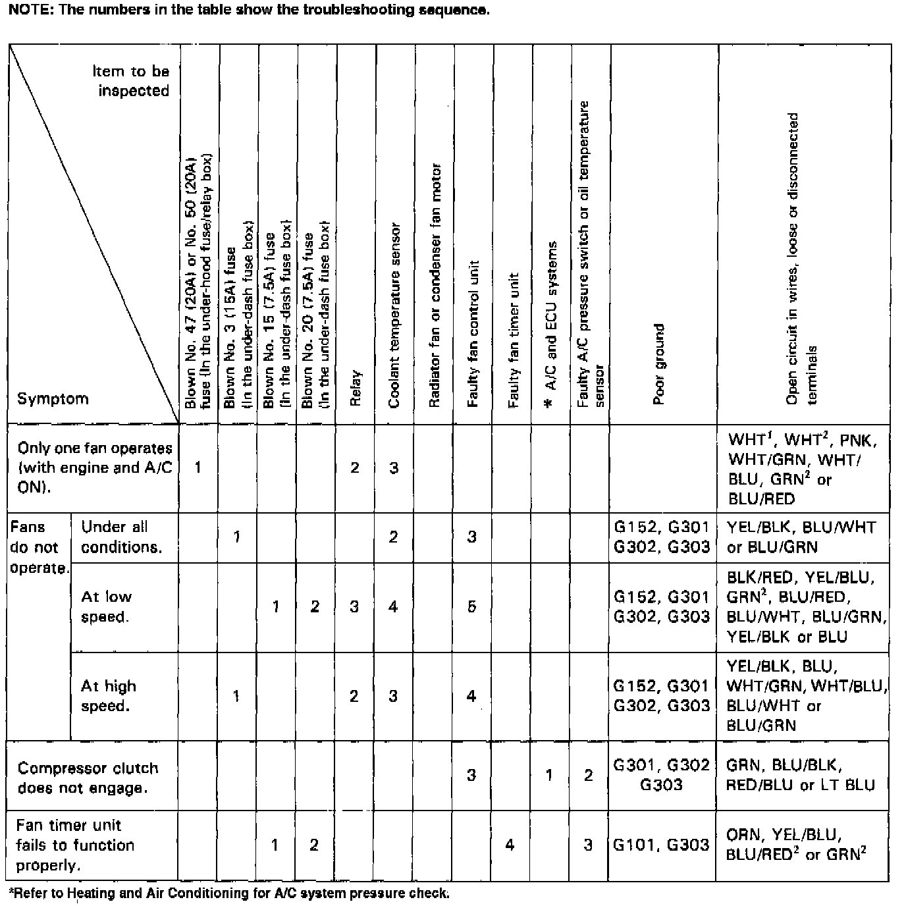

Operation CHARM
: Car repair manuals for everyone.
Home
>>
Acura
>>
1992
>>
Legend Coupe V6-3206cc 3.2L SOHC FI
>>
Repair and Diagnosis
>>
Engine, Cooling and Exhaust
>>
Cooling System
>>
Radiator Cooling Fan
>>
Radiator Cooling Fan Motor
>>
Testing and Inspection
>>
Symptom Related Diagnostic Procedures
>>
Diagnostic Charts
Diagnostic Charts
Fan Controls Troubleshooting Chart:
